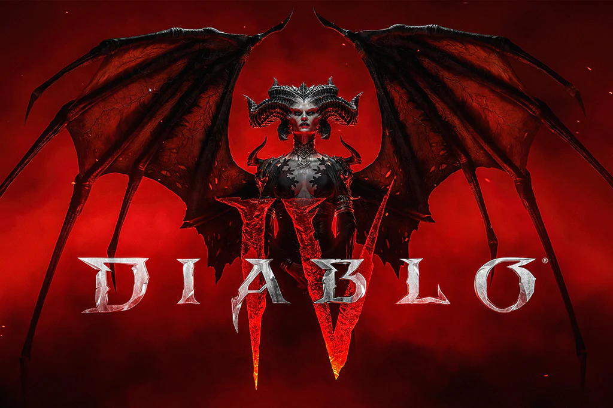

Starfield (PC, XBOX SERIES X|S)
Release Date: September 6, 2023

Dead Island 2 (PC, PS4, PS5, Xbox One, Xbox Series X|S)
Release Date: April 21, 2023

Baldur's Gate 3 (PC, PS5, Xbox Series X|S)
Release Date: January 14

Diablo IV (Xbox Series X/S, PS5, PS4, Xbox One, PC)
Release Date: June 5, 2023

The Legend of Zelda: Tears of the Kingdom -(Nintendo Switch)
Release Date: May 12
Review:
This is a placeholder for the review of The Legend of Zelda: Tears of the Kingdom.
Submit a Review
Wild Hearts - (PC, PS5, Xbox Series X/S)
Release Date: February 17

Lies of P - PC, PS4, PS5, Xbox One, Xbox Series X/S
Release Date: September 19, 2023

Redfall - PC, Xbox Series X/S
Release Date: May 2, 2023